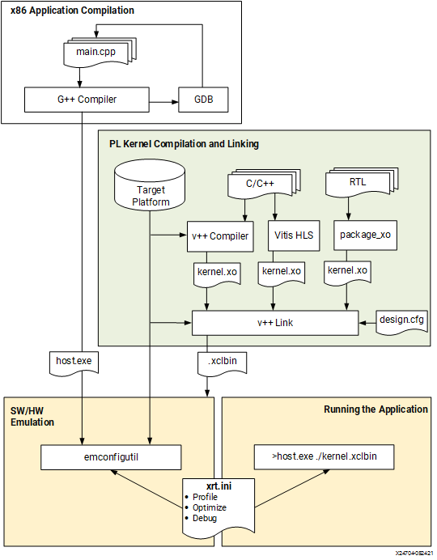

Vitis™ Application Acceleration Development Flow Tutorials |
Vitis Getting Started Tutorial¶
Version: Vitis 2021.2
Part 4 : Build and Run the Data Center Application¶
In this fourth part of the Introduction to Vitis tutorial, you will compile and run the vector-add example using each of three build targets supported in the Vitis flow as described below. The overall flow is described in Data Center Application Acceleration Flow, and includes the image flow diagram shown below. From the image you can see the standard G++ compilation process for the host application, and the use of the Vitis compiler (v++) for building the Xilinx device binary (xclbin). These are the steps you will be working through in this lab.

Software Emulation - The kernel code is compiled to run on the host processor. This allows iterative algorithm refinement through fast build-and-run loops. This target is useful for identifying syntax errors, performing source-level debugging of the kernel code running together with application, and verifying the behavior of the system. Refer to Software Emulation for more information.
Hardware Emulation - The kernel code is compiled into a hardware model (RTL), which is run in a dedicated simulator. This build-and-run loop takes longer but provides a detailed, cycle-accurate view of kernel activity. This target is useful for testing the functionality of the logic that will go in the FPGA and getting initial performance estimates. Refer to Hardware Emulation for more information.
Hardware - The kernel code is compiled into a hardware model (RTL) and then implemented on the FPGA, resulting in a binary that will run on the actual FPGA. Refer to System Hardware Target for more information.
Building and Running on Alveo U200 Data-Center Accelerator Card¶
Setting up the environment¶
IMPORTANT: This tutorial requires Vitis 2021.1 or later to run.
NOTE: The instructions provided below assume that you are running in a bash shell.
To configure the environment to run Vitis, source the following scripts:
source <VITIS_install_path>/settings64.sh source <XRT_install_path>/setup.sh
Then make sure the following environment variable is correctly set to point to your U200 platform installation directory.
export PLATFORM_REPO_PATHS=<path to the U200 platform install dir>
Targeting Software Emulation¶
To build for software emulation, enter the following commands to setup the target build directory:
cd <Path to the cloned repo>/Getting_Started/Vitis/example/u200
mkdir sw_emu
cp xrt.ini sw_emu
cd sw_emu
Then, after changing into the target build directory, enter the following commands to build the host application and device binary:
g++ -Wall -g -std=c++11 ../../src/host.cpp -o app.exe -I${XILINX_XRT}/include/ -L${XILINX_XRT}/lib/ -lOpenCL -lpthread -lrt -lstdc++
emconfigutil --platform xilinx_u200_gen3x16_xdma_1_202110_1 --nd 1
v++ -c -t sw_emu --platform xilinx_u200_gen3x16_xdma_1_202110_1 --config ../../src/u200.cfg -k vadd -I../../src ../../src/vadd.cpp -o vadd.xo
v++ -l -t sw_emu --platform xilinx_u200_gen3x16_xdma_1_202110_1 --config ../../src/u200.cfg ./vadd.xo -o vadd.xclbin
Here is a brief explanation of each of these four commands:
g++compiles the host application using the standard GNU C compiler. Refer to Building the Host Program for more information.emconfigutilgenerates an emulation configuration file which defines the device type and quantity of devices to emulate for the specified platform. Refer to emconfigutil for more information.v++ -ccompiles the source code for the vector-add accelerator into a compiled kernel object (.xo file). Refer to Compiling Kernels with the Vitis Compiler for more information.v++ -llinks the compiled kernel with the target platform and generates the FPGA binary (.xclbin file). Refer to Linking the Kernels for more information.
The -t option of the v++ command specifies the build target. Here it is set to sw_emu so we are building for software emulation.
Notice also the --config option which is used to specify the name of a configuration file containing additional options. Here we are using this configuration file to specify the name of the targeted platform and the mapping of kernel arguments to specific memory banks.
platform=xilinx_u200_gen3x16_xdma_1_202110_1
debug=1
save-temps=1
[connectivity]
nk=vadd:1:vadd_1
sp=vadd_1.in1:DDR[1]
sp=vadd_1.in2:DDR[2]
sp=vadd_1.out:DDR[1]
[profile]
data=all:all:all
Building for software emulation is quick and shouldn’t take more than a few minutes. After the build process completes, you can launch the software emulation run as follows:
export XCL_EMULATION_MODE=sw_emu
./app.exe
You should see the following messages, indicating that the run completed successfully:
INFO: Found Xilinx Platform
INFO: Loading 'vadd.xclbin'
TEST PASSED
If you look at the directory contents for the u200/sw_emu directory you should see some of the following files that were created during this exercise:
app.exe: The compiled and linked host application
emconfig.json: The emulation platform created by emconfigutil
vadd.xo: The compiled Vadd kernel
vadd.xo.compile_summary: A summary report of the compiled kernel
vadd.xclbin: The device binary linking the kernel and target platform
vadd.xclbin.info: A text report of the device binary
vadd.xclbin.link_summary: A summary report of the linked device binary
opencl_trace.csv: A report of events occurring during the application runtime
summary.csv: A report of the application profile
xrt.run_summary: A summary report of the events of the application runtime
These files and reports are the results of the build and run process targeting the software emulation build. You wil be taking a closer look at some of these files in Part 5 of this tutorial.
Targeting Hardware Emulation¶
To build for hardware emulation, enter the following commands to setup the target build directory:
cd <Path to the cloned repo>/Getting_Started/Vitis/example/u200
mkdir hw_emu
cp xrt.ini hw_emu
cd hw_emu
Then, after changing into the target build directory, enter the following commands to build the host application and device binary:
g++ -Wall -g -std=c++11 ../../src/host.cpp -o app.exe -I${XILINX_XRT}/include/ -L${XILINX_XRT}/lib/ -lOpenCL -lpthread -lrt -lstdc++
emconfigutil --platform xilinx_u200_gen3x16_xdma_1_202110_1 --nd 1
v++ -c -t hw_emu --platform xilinx_u200_gen3x16_xdma_1_202110_1 --config ../../src/u200.cfg -k vadd -I../../src ../../src/vadd.cpp -o vadd.xo
v++ -l -t hw_emu --platform xilinx_u200_gen3x16_xdma_1_202110_1 --config ../../src/u200.cfg ./vadd.xo -o vadd.xclbin
Refer to Targeting Software Emulation for a brief explanation of these different commands. The only difference with the previous step is the v++ target (-t) option which is changed from sw_emu to hw_emu. All other options remain the same.
Building for hardware emulation takes more time than for software emulation, but still much less than when targeting the hardware accelerator card. After the build process completes, you can run hardware emulation using the following commands:
export XCL_EMULATION_MODE=hw_emu
./app.exe
When the run completes, you should see the TEST PASSED message indicating that the run completed successfully. You can list the contents of the u200/hw_emu folder to see the files that were created during this build and run process. Refer to Targeting Software Emulation for a brief explanation of the different files.
Targeting Hardware¶
To build for the hardware target, , enter the following commands to setup the target build directory:
cd <Path to the cloned repo>/Getting_Started/Vitis/example/u200
mkdir hw
cp xrt.ini hw
cd hw
Then, after changing into the target build directory, enter the following commands to build the host application and device binary:
g++ -Wall -g -std=c++11 ../../src/host.cpp -o app.exe -I${XILINX_XRT}/include/ -L${XILINX_XRT}/lib/ -lOpenCL -lpthread -lrt -lstdc++
v++ -c -t hw --platform xilinx_u200_gen3x16_xdma_1_202110_1 --config ../../src/u200.cfg -k vadd -I../../src ../../src/vadd.cpp -o vadd.xo
v++ -l -t hw --platform xilinx_u200_gen3x16_xdma_1_202110_1 --config ../../src/u200.cfg ./vadd.xo -o vadd.xclbin
To target Hardware, the v++ -t option is set to hw and the emconfigutil command is not needed, as you will be running on an actual hardware platform rather than an emulated platform. All other options remain identical.
Building for hardware targets can take a couple of hours, or more significant time depending on the design complexity, the machine you are building on, and its current workload.
After the build completes you can run the application on a system with the Alveo U200 Data Center accelerator card using the following command:
./app.exe
NOTE: Make sure to run the program on a server where the Alveo card is installed. If you built the application on a different machine, you will need to source the /opt/xilinx/xrt/setup.sh script after connecting to the desired server and before running the above command.
You should see the same TEST PASSED message indicating that the run completed successfully. If you look in the u200/hw folder you will see some of the files that were created during this build and run process. Refer to Targeting Software Emulation for a brief explanation of the different files.
Congratulations!! You have just completed your first run of a Vitis accelerated application on the Alveo U200 card! There are additional Vitis-Tutorials to work through to learn additional details of the Vitis tools, and Vitis_Accel_Examples to use for examples of host application and kernel coding.
Next Step¶
Click here to Visualizing Results and Viewing Reports
License statement
Licensed under the Apache License, Version 2.0 (the “License”); you may not use this file except in compliance with the License. You may obtain a copy of the License at: http://www.apache.org/licenses/LICENSE-2.0
Unless required by applicable law or agreed to in writing, software distributed under the License is distributed on an “AS IS” BASIS, WITHOUT WARRANTIES OR CONDITIONS OF ANY KIND, either express or implied. See the License for the specific language governing permissions and limitations under the License.
Copyright© 2020–2021 Xilinx